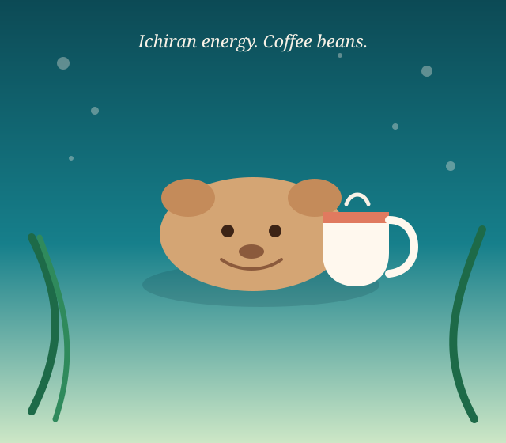

Capycoffee
Capycoffee
Rotating SKU · beans first
Ichiran-style coffee. One bird in the water.
Capycoffee sells one rotating coffee: Freebird. You pick a depth — Young Capy 1.0, Adult Capy 3.0, or Grandpa Capy 5.0 — we roast it on a Kaffelogic Nano 7, and you get a ticket. No menu maze. Beans are the point; a tasting cup is optional.

This week’s bird
Freebird, roasted to order
A washed, high-grown lot with stone fruit when kept light, cocoa when pushed dark. We do not invent a second SKU to look busy. When Freebird rotates out, the board changes.
250g bags · whole bean default
Order like a counter ticket: roast profile, when you want it dropped, grind, bag size, quantity. Optional brew method. Optional tasting cup if you want a sidecar for the first pour.
This is a demo checkout — your ticket lives in this browser’s session until you close the tab. No card numbers, no invented prices from a shopping cart.
Order FreebirdPick a depth